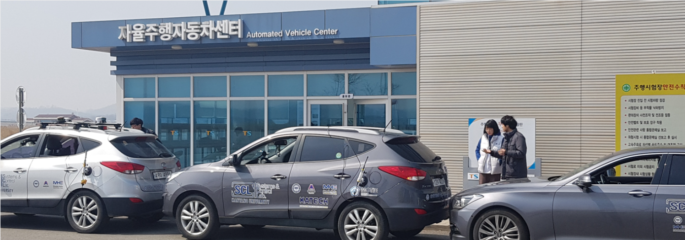
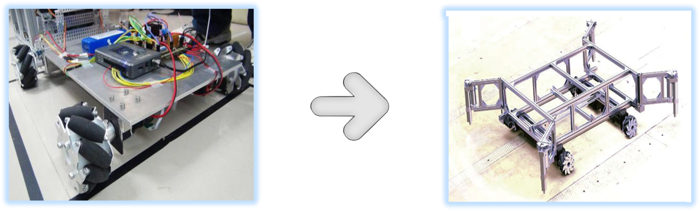

Pengfei Lin (林鹏飞)
I am currently a Ph.D. candidate at Tsukada Lab, The University of Tokyo, where I am supervised by Prof. Manabu Tsukada, working on autonomous vehicles, motion planning, optimization control, etc. Before that, I did my M.S. at Systems and Control Lab, Hanyang University, where I was advised by Prof. Chung Choo Chung. I finished my B.S. at the school of automation, Northwestern Polytechnical University.
Email: linpengfei0609@gmail.com
Google Scholar /
LinkedIn /
ResearchGate
News
02/2022, one paper has been accepted by IEEE Robotics and Automation Letters (RA-L) with ICRA 2022.
01/2022, I'm glad to be selected as a student researcher at Tier IV, Inc..
12/2021, one paper has been accepted by Asian Journal of Control (AJC).
10/2021, I'm glad to be selected as a research fellow for SPRING GX Project.
07/2021, I'm glad to be selected as a research assistant at Special Incentives Program, Graduate School of IST.
10/2020, one paper received "Best Paper Award Finalists" at ICCAS 2020.
07/2020, one paper received "Best Paper Award" at KSAE (The Korean Society of Automotive Engineers).
09/2020, one paper has been accepted by CACS 2020.
04/2020, one paper has been accepted by IEEE ITSC 2020.
04/2020, one paper has been accepted by CCC 2020.
Research Projects
Deep Learning-based Open EV Platform Technology for Autonomous Driving

This research project is to develop an open EV platform for Level 3 autonomous navigation based on sensing, control interface specifications, protocols, and in-depth learning AI-based decision making, control algorithms, and diffusion and verification service technologies using it.
Compound Omnidirectional Mobile Platform Based on Mecanum Wheel

This research project is to develop an omnidirectional composite mobile platform, learning the mechanical structure of the Mecanum Wheel, improve the stability of the mobile platform under different loads and improve the adaptability of the platform to complex terrain.
Publications
I'm interested in developing planning algorithms for autonomous vehicles via model predictive control, potential function, clothoidal curve, etc.
Conference Papers:
- Model Predictive Path-Planning Controller with Potential Function for Emergency Collision Avoidance
Pengfei Lin, and M. Tsukada
IEEE ICRA 2022 | In Proceeding for Publication
- Local Path Planning Using Artificial Potential Field for Waypoint Tracking with Collision Avoidance
Pengfei Lin, W. Y. Choi, and C. C. Chung
IEEE ITSC 2020 | paper
- Waypoint Tracking for Collision Avoidance Using Artificial Potential Field
Pengfei Lin, W. Y. Choi, J. H. Yang, and C. C. Chung
CCC 2020 | paper
- Model Predictive Path Planning Based on Artificial Potential Field and Its Application to Autonomous Lane Change
Pengfei Lin, W. Y. Choi, S. H. Lee, and C. C. Chung
ICCAS 2020 | paper (Student Best Paper Award Finalists)
- Path-Planning for Intelligent Vehicles Based on Virtual Potential Function under Multi-obstacles
Pengfei Lin, S. H. Lee, and C. C. Chung
CACS 2020 | paper
- Intelligent Vehicle for Collision Avoidance Using Artificial Potential Field with Speed Variation
Pengfei Lin, W. Y. Choi, and C. C. Chung
KSAE 2020 | paper (Best Paper Award)
- Autonomous Lane Change System for Intelligent Vehicle Based on Model Curve Fitting
Pengfei Lin, W. Y. Choi, and C. C. Chung
KSAE 2020 | paper
- Autonomous Driving Using Artificial Potential Function for Vehicle Collision Avoidance
Pengfei Lin, J. H. Yang, W. Y. Choi, and C. C. Chung
ICROS 2020 | paper
Journal Papers:
- Model Predictive Path-Planning Controller with Potential Function for Emergency Collision Avoidance
Pengfei Lin, and M. Tsukada
IEEE Robotics and Automation Letters (RA-L) with ICRA 2022 Option | (Regular Paper)
- Potential Field-based Path Planning for Emergency Collision Avoidance with a Clothoid Curve in Waypoint Tracking
Pengfei Lin, J. H. Yang, Y. S. Quan, and C. C. Chung
Asian Journal of Control (AJC) | paper (Special Issue)
Awards
2022.04-2024.03, Tier IV Student Researcher Program
2022.04-2023.03, IST-RA Scholarship
2021.10-2024.03, SPRING GX Fellowship
2018.09-2020.06, Science and Engineering Foreign Scholarship
2016.06-2017.05, National Innovation Training Program for Colleges "Excellent Award"
Languages
Chinese (Native)
English (IELTS: 6.5)
Korean (TOPIK: Level 4)
Japanese (Beginner)
Welcome to use this website's
source code, just add a link back to here.